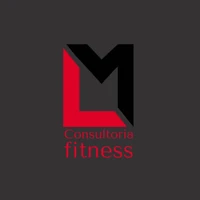
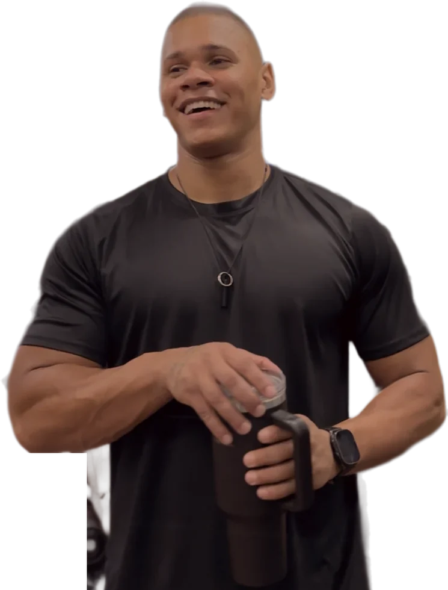
Lucas MedeirosTreinador e Nutricionista
É acompanhamento semanal, ajuste constante no treino e no planejamento nutricional. Um plano feito pro seu corpo, não um pacote genérico que qualquer um recebe.
Arraste a barra para comparar e toque nas fotos para ver outros alunos.
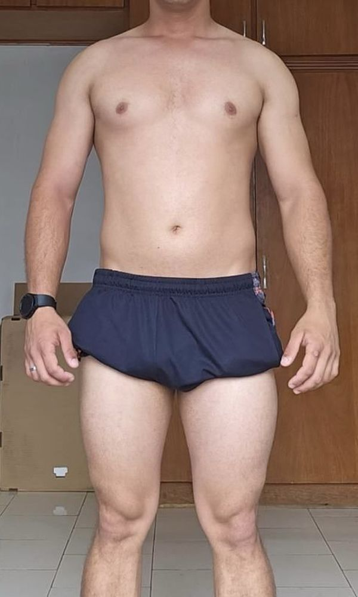
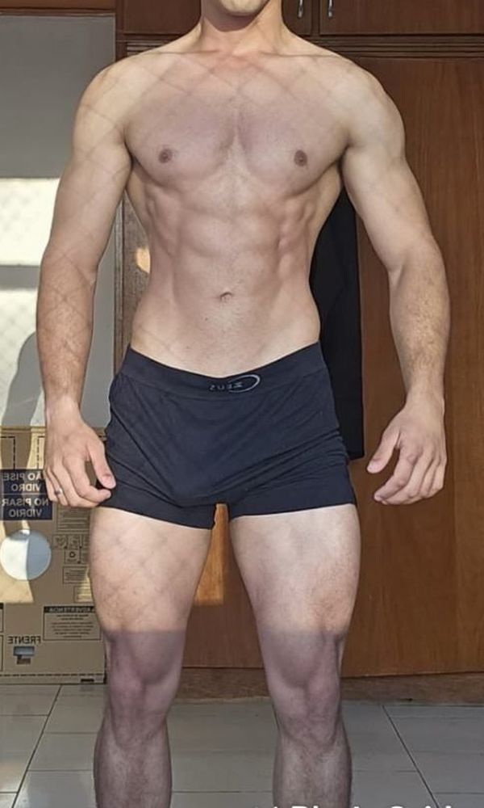
Você recebe por e-mail o login do Prime Coach, onde roda toda a consultoria.
No app, você conta seu histórico e envia fotos de frente, lado e costas.
Eu monto treino e planejamento nutricional pro seu caso, nada de pacote pronto.
A gente conversa e acerta tudo antes de começar.
Mensagem toda semana e WhatsApp aberto todos os dias pra qualquer dúvida.
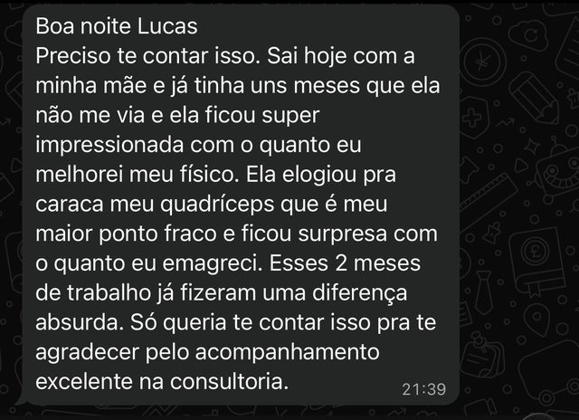
2 meses de acompanhamento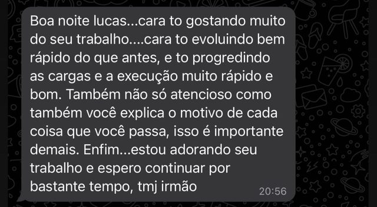
Evolução de carga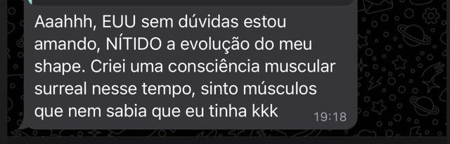
Consciência muscular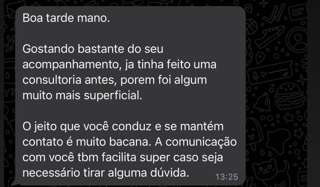
Já tinha feito consultoria antes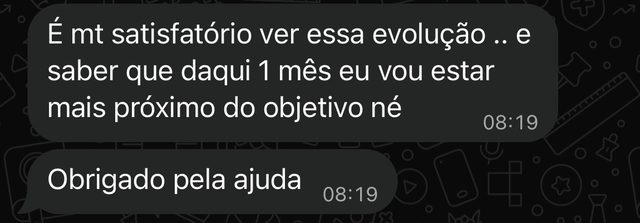
Evolução mês a mês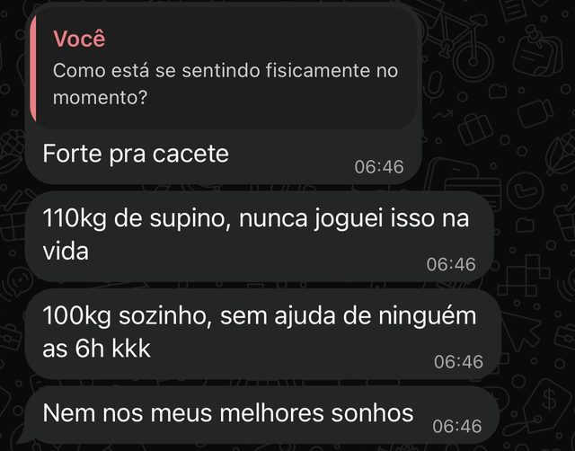
Recorde no supino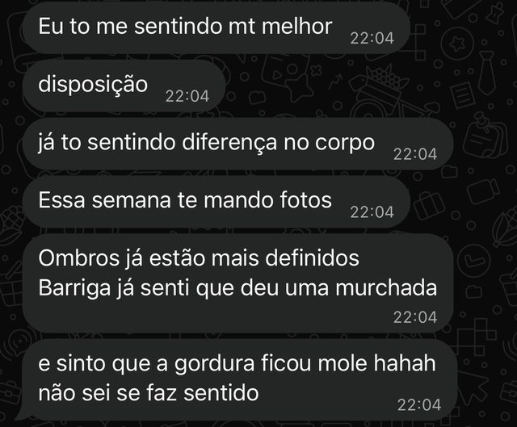
Mais disposiçãoSem treino pronto, sem plano nutricional de gaveta. Você me conta seu histórico e sua rotina, eu monto um plano que cabe na sua vida, e a gente ajusta juntos toda semana até o resultado aparecer de verdade.